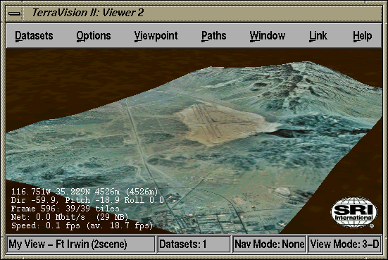
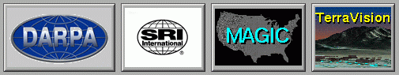

The 3-D Viewer

The 3-D Viewer allows you to navigate around the terrain
in 3-D. That is, the elevation data are used to create the 3-D
geometry that models the undulation of the actual terrain, and the
imagery data are used as texture maps for this geometry.
Mouse Controls
You can navigate around the 3-D environment using a mouse by moving
the cursor into the viewer window and using the mouse buttons as
follows:
- Middle Mouse Button: rotates the current viewpoint as you
drag the mouse but does not change your location, i.e. this can be
considered analgous to simply moving your head to look around the
environment. You can also use this button to stop if you are currently
moving.
- Left Mouse Button: accelerates you through the
environment. You can move the mouse while you are moving forward to
change your trajectory.
- Right Mouse Button: decelerates your forward momentum,
eventually moving you backwards through the environment once you reach
zero velocity. You can move the mouse while you are moving forward to
change your trajectory.
If you depress one of the SHIFT keys on the keyboard, then the
behaviour of the mouse navigation changes to give you viewer-centric
navigation as follows:
- SHIFT + Middle Mouse Button: slides the current viewpoint
to the left or right, up or down, depending upon how you move the
mouse from the initial mouse click. You can think of this as
equivalent to side-stepping or bobbing your head up or down.
- SHIFT + Left Mouse Button: accelerates you forward along
the direction that you are currently facing.
You can move the mouse while you are moving forward in order to
slide the viewpoint during the motion.
- SHIFT + Right Mouse Button: decelerates your forward
momentum, eventually moving you backwards from the way that you are
currently facing. Again, you can move the mouse while you are moving
forward in order to slide the viewpoint during the motion.
Keyboard Controls
You can press a number of keys while the mouse is over the 3-D Viewer
in order to quickly access a number of features. Currently, the
following key strokes are supported:
- 'N' - display the Navigation Settings dialog
- 'R' - display the Rendering Settings dialog
- 'D' - display the Debug Settings dialog
- 'V' - display the VRML Features Selection dialog
- 'C' - display the Viewpoint Control dialog
- 'S' - display the Viewpoint Status dialog
- 'B' - display the Viewpoint Bookmarks dialog
- 'O' - return to the default (Origin) viewpoint
- '2' - switch to 2-D constrained viewing mode
- '3' - switch to 3-D viewing mode
- 'H' - toggle the display of the Heads Up Display
- 'M' - toggle display of the menu bar at the top of the window
- 'W' - toggle display of the web icons panel at the
bottom of the window
- 'F' - toggle the full screen mode
- 'A' - toggle the display of the status bar at the
bottom of the window
- 'Esc' - close the 3-D viewer
- 'Ctrl+P' - Play the current flight path
- 'Ctrl+S' - Stop the currently playing flight path
- 'Ctrl+U' - Continue a previously stopped flight path
- 'Ctrl+T' - Jump to the first viewpoint in the current path
- 'Ctrl+N' - Jump to the next viewpoint in the current path
- 'Ctrl+V' - Jump to the previous viewpoint in the current path
- 'Ctrl+E' - Jump to the last viewpoint in the current path
Menus
The Out the Window viewer has a menu bar along the top of the window
with a number of options. These are as follows:
- Datasets : options for
managing the set of datasets that are being displayed
- Options : options for
controlling the render settings and the user's navigation.
- Viewpoint : options for
controlling the user's position and orientation in the 3-D
environment.
- Paths : the flight path
facility of TerraVision
- Window : options for
controlling the window display
- Link : options for linking
to other TerraVision viewers
- Help : help pages on
how to use the 3-D viewer
Heads Up Display
The Heads Up Display (HUD) provides a textual overlay in the
bottom-left corner of the display with various useful pieces of
information. Currently this includes:
- The (latitude, long, elevation) of your viewpoint
- Your (yaw, pitch, roll) orientation
- The current frame number and the number of tiles in the scene
- The 1 second data burst rate into the application (MBit/s) and the
total amount of data read so far
- The frame rate of the graphics system (instantaneous and averaged
over 5 second)
You can toggle the display of the HUD from the "Options/Render Options"
menu entry, or pressing 'H' on the keyboard.
Status Bar
The Status Bar is a strip at the bottom of the window which provides a
number of useful pieces of information. It has the following fields:
| Viewpoint Name |
Number of Datasets |
Navigation Mode |
View Mode |
The Viewpoint Name has the name of the bookmark for the current
location assuming that you have just jumped to a certain bookmark. If
you move from this viewpoint, then this field will be empty.
The Number of Datasets field displays the number of GeoSets that
are currently being displayed in the viewer. You can load new GeoSets
via the "File/Open Dataset" option, and you can also select which
subset of all loaded dataset you want to display via the
"Datasets/Dataset Display" option/
The Navigation Mode tells you what will happen when you use your
mouse to navigate. In "Fly Mode" your mouse lets you change the (yaw,
pitch, roll) and forward velocity; in "Slide Mode" you have a pan and
zoom type metaphor, in "Fly To Mode" the left button is used to pick a
point to zoom up to.
The View Mode tells you whether the current viewer is operating in
3-D mode, or if the 2-D constrain mode is on. In 2-D mode, the
viewpoint is constrained to always looks down and a "Slide" Navigation
Mode is enforced.
You can toggle the display of the Status Bar by selecting the
"Window/Show Status Bar" menu option, or pressing 'A' on the keyboard.
Web Icons

Along the bottom of the viewer window you will see a number of icons,
such as the SRI logo and TerraVision logo. Clicking over these will
display the appropriate WWW home page, e.g. the SRI logo will take you
to the SRI International Home Page, http://www.sri.com/. N.B. You will
have to have the command "netscape" in your path for this to work. If
you already have a netscape session running, then TerraVision will try
to open the URL using this session rather than trying to spawn another
netscape process.
You can toggle the display of the Web Icon panel by selecting the
"Window/Show Web Icons" menu option, or pressing 'W' on the keyboard.
User Guide Contents /
TerraVision Home Page